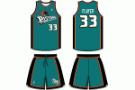
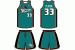

The Detroit Pistons are often overlooked when people talk about
the best NBA teams of all time but the 1988-89 squad absolutely
deserves to be on that list..
This is ironic considering the Detroit Pistons were the only team to beat all three of those teams, yet, they’ve somehow been reduced to side characters in the era.


 
